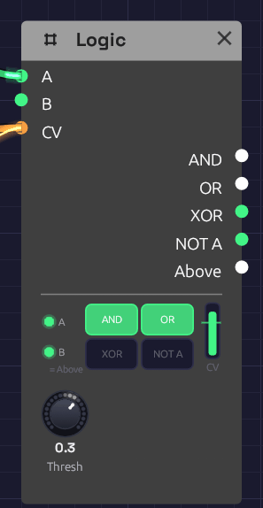

Logic
Module ID util.logic · Category Utility

A clock in A, an LFO in CV, nothing in B. The LFO is above the Threshold line, so B, standing in for Above, is lit. A clock pulse is high in A, so AND and OR are high too.Logic answers questions about gates. Are both of these high? Is either? Is exactly one? Its other half answers a question about a control voltage: is it above this line? The answer is a gate, so Logic is how a control signal reaches a gate input, which a cable alone can't do.
The node shows its working. Two small lamps at the left light while A and B are high. The four big lamps light while AND, OR, XOR and NOT A are, so the truth table plays out as the gates come and go. The column at the right is the CV, rising past the Threshold line and turning green when it's above. Drag the line to move the Threshold.
Inputs
| Port | Signal Type | Description |
|---|---|---|
| A | Gate (Green) | The first gate for AND, OR, XOR and NOT A |
| B | Gate (Green) | The second gate for AND, OR and XOR. With nothing patched, B is Above (see below) |
| CV | Control (Orange) | A voltage to compare with Threshold. Audio patches in too |
Outputs
| Port | Signal Type | Description |
|---|---|---|
| AND | Gate (Green) | High while A and B are both high |
| OR | Gate (Green) | High while A or B is high |
| XOR | Gate (Green) | High while exactly one of A and B is high |
| NOT A | Gate (Green) | High while A is low. With nothing in A it's always high |
| Above | Gate (Green) | High while CV is above Threshold |
Parameters
| Knob | Range | Default | Description |
|---|---|---|---|
| Thresh | -1 – 1 | 0.5 | Where Above switches |
How it works
Combining
The logic outputs follow A and B sample by sample, with no memory. Anything above 0.5 counts as high, as on every gate input.
| A | B | AND | OR | XOR | NOT A |
|---|---|---|---|---|---|
| low | low | low | low | low | high |
| high | low | low | high | high | low |
| low | high | low | high | high | high |
| high | high | high | high | low | low |
Comparing
Above goes high when CV rises past Threshold + 0.01, and low again when it falls below Threshold − 0.01. That little gap is hysteresis: a slow or noisy signal crossing the threshold switches once instead of chattering.
Gate outputs can feed control inputs, but control outputs can't feed gate inputs, because a control signal has no clear on and off. Above is how you say where on and off are.
B is normalled to Above
With nothing patched into B, B reads Above, the way a jack on a hardware module can be wired to a signal until a cable is plugged in. The lamp under B says = Above while it does. So one Logic, with a clock in A and a control voltage in CV, gives a clock that runs only while the CV is high, at AND. Patch anything into B and it's an ordinary input again.
With nothing in CV either, Above is low at the default Threshold, so an empty B behaves like an empty jack.
Patches
A clock that waits for the wind
[Clock Gate] ──> [Logic A]
[Noise Random] ──> [Logic CV] (Thresh -0.3; B empty)
[Logic AND] ──> [ADSR Gate]
Clock pulses reach the envelope only while Noise's slow Random is above the threshold. The notes come in gusts and stop in the calms between them. This is the chime in Shoreline.
Make a gate from an LFO
[LFO Out] ──> [Logic CV] (Thresh 0.5)
[Logic Above] ──> [ADSR Gate]
The envelope opens each time the LFO rises past the threshold and closes as it falls back. Raise the threshold and the gates get shorter. Patch a Sequencer's Pitch into CV instead, with the threshold between two notes, and the high notes open a gate the low ones don't.
Only on the beat
[Audio Input Gate] ──> [Logic A]
[Clock Gate] ──> [Logic B]
[Logic AND] ──> [ADSR Gate]
Hits from a drummer or a microphone come through only while the clock's gate is high, so loose playing is cut back to the grid.
Where two rhythms meet
[Clock Divider 1 Trig] ──> [Logic A] (Div 3)
[Clock Divider 2 Trig] ──> [Logic B] (Div 4)
[Logic AND] ──> [ADSR Gate]
Two Clock Dividers on one sixteenth clock play three against four. AND fires only where they meet, once every twelve sixteenths. XOR fires where exactly one of them plays. XOR OR with the clock itself in a second Logic and you get every pulse neither played: the gaps. Interlock gives each of the three its own voice, so together they play every sixteenth exactly once.
Turn a gate upside down
NOT A is high while A is low. Patch a sequencer's Gate into A and NOT A is high in the rests, ready to open a second envelope that fills the gaps.
Related modules
- Clock Divider: rhythms to combine
- Interlock: a gamelan-style example built around AND, OR, XOR and an empty B
- Clock: the pulse to gate
- Audio Input: gates from a microphone or instrument
- Attenuverter: scale a control signal before CV, or turn a gate into a control voltage